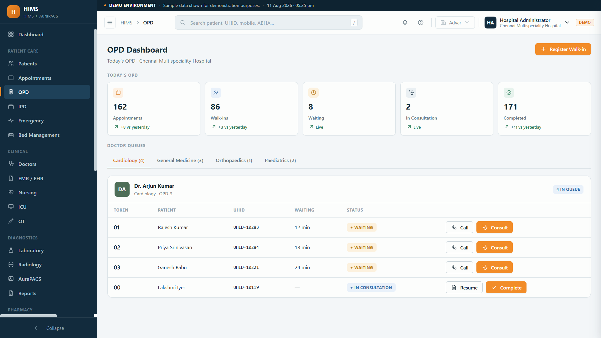

Online booking, doctor slots, a live token queue and WhatsApp reminders, with walk-ins and bookings on the same list. Fewer no-shows, shorter waits, and a front desk that is in control.

Phone bookings, a paper list and walk-ins all colliding means long waits, arguments over turns, and slots left empty when someone does not show.
No clear order, so patients crowd the desk.
Booked patients who never arrive, with no reminder sent.
Walk-ins and phone bookings clashing on the same slot.
Online or desk.
WhatsApp before the visit.
Token issued.
Order by doctor and room.
Next patient in.
Patients pick an open slot online, in seconds.
Many doctors, one flow.
Simple, orderly booking.
Slot-based sample collection.
Control the queue.
A predictable day.
Shorter, clearer waits.
Our imaging module has a live demo, so the clinical platform is real.
Elevate Aura builds WhatsApp automation into its platforms, so reminders that actually go out are core to us.
Founder-led delivery, so you talk to the builder.
Yes. Patients book a doctor and slot online, get a confirmation and a WhatsApp reminder, which cuts phone calls and no-shows.
Yes. A live token queue shows who is next per doctor and room, so the waiting area is orderly and patients know their turn.
Yes. Walk-ins and online bookings share the same queue, so the front desk manages both without double-booking.
Yes. Automatic reminders and easy rescheduling reduce no-shows, so slots do not sit empty.
Yes. Each doctor has their own schedule and queue, all inside the full hospital system.
Tell us how patients book and wait today. We will set up online booking, tokens and reminders that keep the day moving.
Online booking · Token queue · WhatsApp reminders